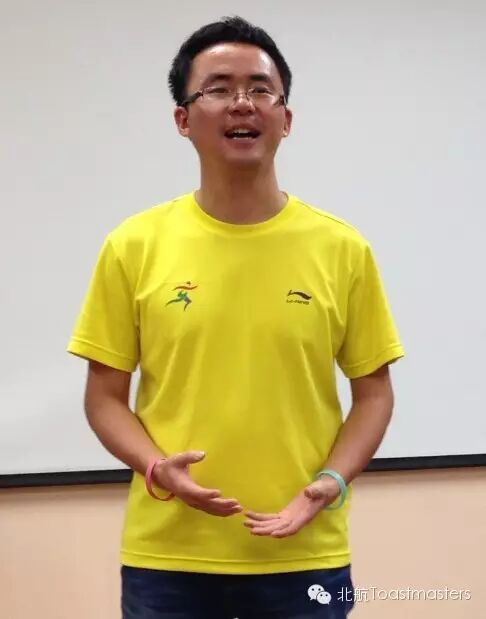

Wesley
北航头马的创始人与教父，一个用"知行合一"把一时心动变成一座俱乐部的人。
干部创始成员活跃 2014–2016出现 4 次 · 4 篇1 场演讲
Wesley 是北航Toastmasters的创始主席（founding president），也是俱乐部口中的"教父""创始人"。他是北航6系（电子信息工程学院）的学长。秉持母校"知行合一"的校训，他说干就干，于是有了北航头马的从无到有。小编对他的评价是"正直可爱又善良"，是北航莘莘学子中知行合一的杰出典范。
从俱乐部的历史脉络看，Wesley时代是"白手起家"的草创时期——此后才有Peter时代的苦心经营、Doris时代、以及Sophie时代的欣欣向荣。在100次纪念meeting的历史回顾中，他被尊称为"教父Wesley"，被认为是几代主席传承与发展的起点。
卸任后，Wesley仍是俱乐部最受欢迎的回访者之一。2014年9月第70次会议，他刚参加完吉隆坡举办的2014头马国际年会（Global Summit / International Convention），回到北航与大家分享见闻，被预告称为"非常特别的人物""非常活跃的演讲者"。2016年6月第141次会议，他作为"本期神秘嘉宾"再度现身，被赞"做的ge很棒"，大家盼他常回来看看。一个因爱而起念、因行动而成事的人，把一时的心动凝成了一座能让人找到归属感的家。
里程碑
- 2013 创办北航Toastmasters三年多前因在外部头马会议对一位女孩一见钟情，萌生在北航办头马的念头，秉持'知行合一'说干就干，成为创始主席。
- 2014-09-12 回访分享国际年会 ↗第70次会议，刚参加完2014吉隆坡头马国际年会，回校分享经历。
- 2015-06-17 被尊为'教父'载入百次纪念 ↗第100次meeting历史回顾中，被列为俱乐部传承之始：'从教父Wesley时代的白手起家'。
- 2016-06 三周年纪念 ↗三周年趴上其创办俱乐部的故事被重温，被赞'正直可爱又善良'的杰出典范。
- 2016-06-14 神秘嘉宾回归 ↗第141次会议作为'本期神秘嘉宾'现身，参与即兴并与Amy组CP，获大家热情欢迎。
做过的演讲 · 1 场
分享他参加2014年吉隆坡头马国际年会（Global Summit）的见闻与体验，作为活跃演讲者回访俱乐部。
担任过的会议角色
嘉宾/回访演讲者×2
为俱乐部做的事
- 从零创办北航Toastmasters俱乐部，奠定俱乐部的根基
- 作为创始主席开启'白手起家'的草创时代，成为几代主席传承的起点
- 参加2014吉隆坡头马国际年会并回校向会员分享，连接俱乐部与国际头马
- 卸任后持续回访、参与会议（即兴、嘉宾分享），保持对俱乐部的关怀与支持
头马里的人
同台搭档
Amy照片墙 · 时间线
共 16 帧，其中 3 帧已用人脸识别确认是本人（带 ✓）。

✓ ✓
✓ ✓
✓


完整足迹 · 4 次出现（点开，每条可跳转原文）
- 2014-09-11第70次 · 分享2014吉隆坡国际年会(KL International Convention)经历
- 2015-06-17第100次 · 历史回顾中被称为白手起家的教父级首任主席
- 2016-06-14第141次 · 作为北航头马创始人回归，与Amy组CP获即兴第一
- 2016-06-27作为北航头马创始人被回顾创办俱乐部故事
“不如在我们北航也创办一个头马俱乐部吧。”